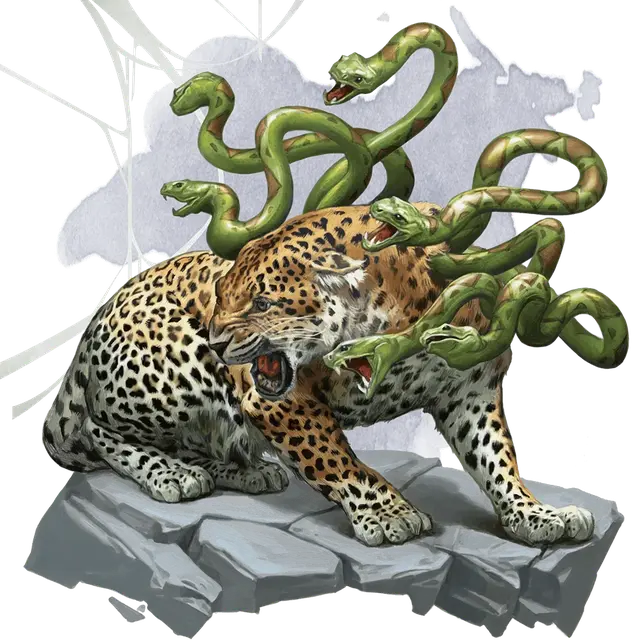

Камадан
Kamadan
Большой Монстр, без мировоззрения

Класс Доспеха 13
Хиты 67 (9к10 + 18)
Скорость 30 футов
| мод | спас | ||
|---|---|---|---|
| СИЛ | 16 | +3 | +3 |
| ЛОВ | 16 | +3 | +3 |
| ТЕЛ | 14 | +2 | +2 |
| мод | спас | ||
|---|---|---|---|
| ИНТ | 3 | −4 | −4 |
| МДР | 14 | +2 | +2 |
| ХАР | 10 | +0 | +0 |
Навыки Восприятие +4, Скрытность +7
Чувства пассивное Восприятие 14
Опасность 4 (1100 опыта)
Бонус мастерства +2
Особенности
Тонкий нюх. . Камадан совершает с преимуществом проверки Мудрости (Восприятие), полагающиеся на обоняние.
Наскок. Если камадан переместится как минимум на 20 футов по прямой к существу, а затем в том же ходу попадёт по нему атакой когтями, эта цель должна преуспеть в спасброске Силы Сл 13, иначе будет сбита с ног. Если цель сбита с ног, камадан может бонусным действием совершить по ней две атаки – одну атаку укусом и одну змеями.
Действия
Мультиатака. . Камадан совершает две атаки: одну укусом или когтями и одну змеями.
Укус. . Рукопашная атака оружием: +5 к попаданию, досягаемость 5 футов, одна цель. Попадание: 6 (1к6 + 3) колющего урона.
Когти. . Рукопашная атака оружием: +5 к попаданию, досягаемость 5 футов, одна цель. Попадание: 6 (1к6 + 3) рубящего урона.
Змеи. . Рукопашная атака оружием: +5 к попаданию, досягаемость 5 футов, одно существо. Попадание: 6 (1к6 + 3) колющего урона, и цель должна пройти спасбросок Телосложения Сл 12, получая 21 (6к6) урона ядом при провале, или половину этого урона при успехе.
Усыпляющее дыхание (перезаряжается после короткого или продолжительного отдыха). . Камадан выдыхает усыпляющий газ в 30-футовом конусе. Каждое существо в этой области должно преуспеть в спасброске Телосложения Сл 12 или упадёт без сознания на 10 минут. Этот эффект заканчивается для существа, если он получает урон или кто-то использует действие, чтобы его разбудить.
Описание
Камадан – кошка-подобный хищник, похожий на леопарда с шестью змеями, растущими из его плеч. Несмотря на то, что оно имеет сходство с ускользающим зверем, эти два существа не связаны (хотя некоторые мудрецы утверждают иное).
Камаданы обычно охотятся в одиночку или в парах. Они могут выдыхать облака сонного газа, которое обычно выпускается, прежде чем вступать в рукопашную схватку.
Если у камадана в пределах дальности действия есть как враги, находящиеся в сознании, так и враги в отключке, он пытается убить врагов, находящихся в сознании прежде, чем прикончить всех спящих врагов.